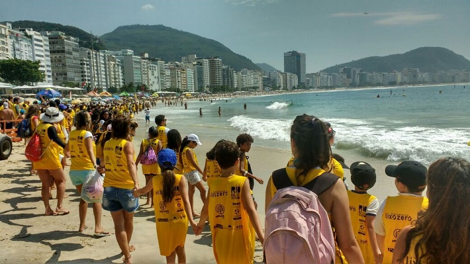

A vida selvagem caiu pela metade em menos de uma geração. Os habitats naturais estão sendo colocados sob crescente pressão. E as mudanças climáticas estão nos levando a um território desconhecido. Mas as pessoas mudaram também. Eles estão mais conscientes da ameaça aos itens essenciais, como comida, água e ar limpo. Eles são mais ambiciosos, mais inovadores. E eles são apoiados por um número crescente de corporações.

Não podemos voltar no tempo. Mas se trabalharmos juntos, podemos evitar mais danos ambientais e ajudar a restaurar a natureza.
Já trabalhamos com comunidades locais, corporações globais, governos e organizações não-governamentais.
Mas queremos fazer mais. Então, estamos construindo as parcerias que temos atualmente e procurando novas ao longo do caminho.
Parar a degradação do ambiente natural do planeta e construir um futuro em que as pessoas vivam em harmonia com a natureza:
❑ Garantir que o uso de recursos naturais renováveis seja sustentável.
❑ Promover a redução da poluição e do consumo desnecessário.
❑ Conservando a diversidade biológica do mundo.
Temos como objetivos:
❑ Transformar os mercados internacionais para que produzam bens e serviços de maneira sustentável (e incentive o público a ser consumidores sustentáveis).
❑ Redefinir o equilíbrio de poder para garantir que as vozes das pessoas mais afetadas pelas mudanças ambientais não sejam mais as mais ignoradas.
❑ Garantir que as instituições financeiras considerem o ambiente em todas as decisões.